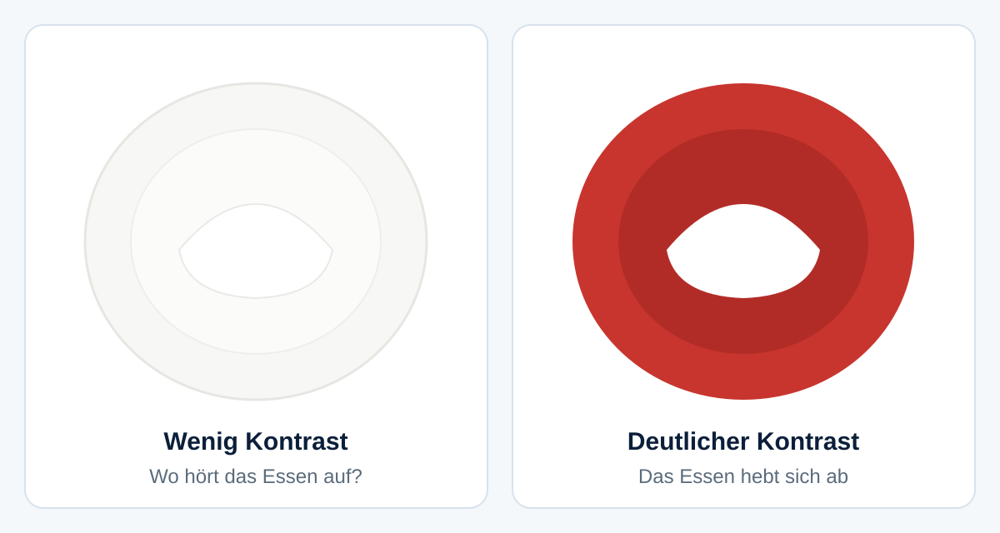
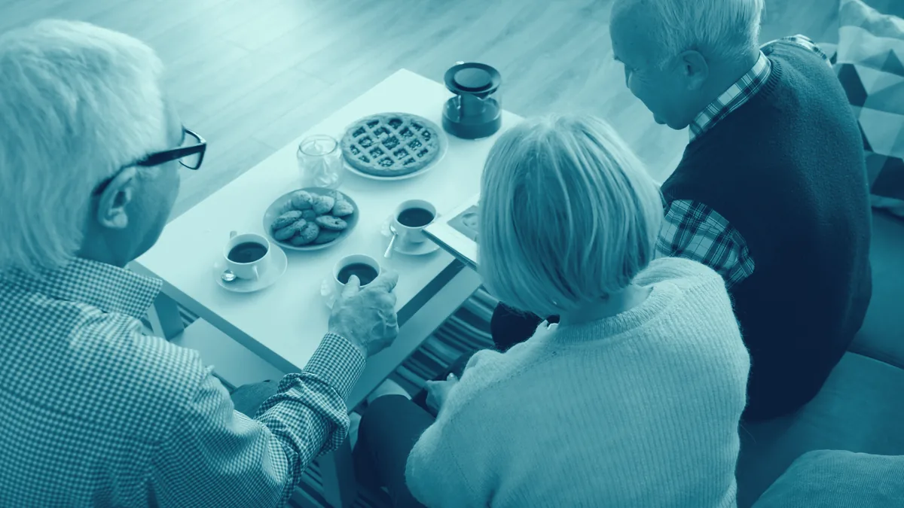
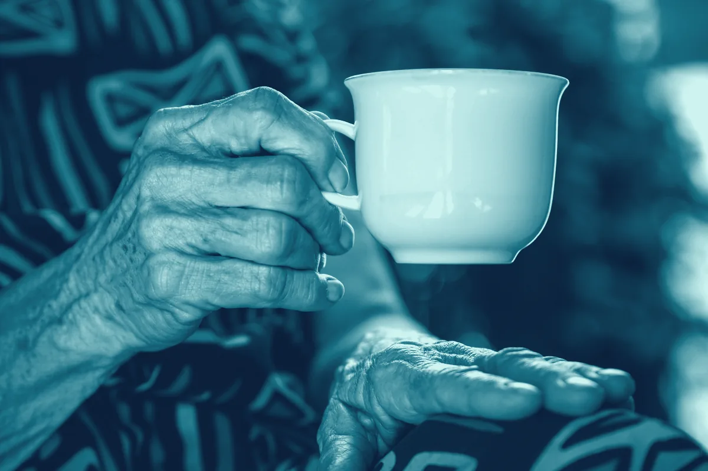

Menschen mit Demenz essen und trinken oft weniger, als sie brauchen. Das sehe ich im Alltag immer wieder. Der Teller geht fast voll zurück, die Tasse steht unberührt da, und man fragt sich, woran das liegt.
Zwei Ideen hört man dazu in der Pflege ständig: ein roter Teller und jemand, der sich dazusetzt und mitisst. Beides klingt einleuchtend. Ich wollte wissen, ob es auch stimmt, und habe deshalb nachgelesen. Dieser Beitrag beantwortet zwei Fragen. Erstens: Was ist wirklich belegt? Und zweitens: Was kann man im Alltag trotzdem tun? Dazu gehört ein eigenes Konzept, das ich aus dem Gelesenen abgeleitet habe.
Der Beitrag ist die ausführliche Fassung zur Podcastfolge „Demenz und Essen: Hilft ein roter Teller wirklich?“ von Pflege weitergedacht. Im Podcast bleibe ich bei den wichtigsten Punkten, hier stehen die Quellen zum Nachlesen. Er richtet sich an Auszubildende, Pflegende und Angehörige.
- Warum Essen bei Demenz schwierig sein kann
- Was heißt eigentlich „belegt“?
- Der rote Teller
- Reicht der Teller allein?
- Gemeinsam essen
- Was die Leitlinien sagen
- Mein Konzept „Wir essen gemeinsam“
- Warum ich das selbst untersuchen möchte
- Was das für die Pflegepraxis heißt
- Das Wichtigste in Kürze
- Häufig gestellte Fragen
- Quellenverzeichnis
Warum Essen bei Demenz schwierig sein kann
Demenz ist eine Erkrankung des Gehirns, bei der Gedächtnis, Denken und Orientierung nachlassen. Oft erkennt man dann auch Dinge schlechter, zum Beispiel das Essen auf dem Teller, oder man weiß nicht mehr, wie man mit dem Besteck umgeht. Dann bleibt das Essen schnell stehen. Von außen sieht das aus wie fehlender Appetit.
Ein Review (eine Übersicht, die viele Studien zusammenträgt) von Cai und Kolleginnen und Kollegen (2026) hat genau solche Ess- und Trinkschwierigkeiten gesammelt, aus Sicht von Betroffenen, Angehörigen und Fachkräften. Ob jemand zu wenig isst, hat also selten nur mit dem Appetit zu tun. Umgebung, Begleitung und die Gestaltung der Mahlzeit spielen mit hinein.
Was heißt eigentlich „belegt“?
Evidenz heißt, wie gut etwas durch Forschung belegt ist. Hohe Evidenz bedeutet sehr gut belegt, niedrige bedeutet Hinweise ohne Sicherheit. Ein systematisches Review sucht nach festen Regeln alle passenden Studien zu einer Frage und wertet sie zusammen aus, eine Metaanalyse rechnet zusätzlich die Zahlen mehrerer Studien zusammen. Ein qualitatives Review wertet keine Messwerte aus, sondern Erfahrungen und Aussagen von Menschen. Und signifikant heißt statistisch bedeutsam, also sehr wahrscheinlich kein Zufall. „Nicht signifikant“ heißt nicht, dass etwas nichts bringt. Man kann es mit diesen Daten nur nicht sicher belegen.
Der rote Teller
Kontrast ist der Unterschied zwischen zwei Dingen, die nebeneinanderliegen. Weißer Reis auf einem weißen Teller auf einer weißen Tischdecke hat fast keinen. Das Auge erkennt kaum, wo das Essen aufhört und der Teller anfängt.
Die bekannteste Studie dazu heißt „Red Plate Study“. Mit hohem Kontrast aßen die Teilnehmenden im Mittel etwa 24,7 Prozent mehr feste Nahrung und etwa 83,7 Prozent mehr Flüssigkeit als mit weißem Geschirr (Dunne et al., 2004; Zahlen laut Gaffney et al., 2026). Das klingt nach sehr viel. Aber es waren nur neun Männer mit fortgeschrittener Alzheimer-Krankheit (einer Form der Demenz).

Ein systematisches Review von Gaffney und Kolleginnen und Kollegen (2026) hat danach breiter geschaut: Essen und trinken ältere Menschen mehr, wenn der Kontrast in der Essumgebung höher ist? In den meisten Studien stieg die Menge tatsächlich. Trotzdem ist die Lage dünn:
- Ins Review gingen nur vier Studien mit zusammen 64 Teilnehmenden ein.
- Eine Studie mit blauem statt weißem Geschirr (Donnelly und Kolleginnen, 2020, im Review beschrieben) fand keinen statistisch bedeutsamen Unterschied. Nur 28 Prozent der Teilnehmenden aßen mindestens 10 Prozent mehr (Gaffney et al., 2026).
- Die Autorinnen und Autoren bewerten die Evidenz selbst als begrenzt und von niedriger Qualität, wegen kleiner Stichproben, kurzer Zeiträume und unterschiedlicher Messmethoden (Gaffney et al., 2026).
Meine Einordnung: Ein deutlicher Kontrast zwischen Essen, Geschirr, Tisch und Umgebung kann helfen. Rot muss es nicht sein, ein kräftig blauer Teller kann ebenso gut sein, wenn er das Essen klar abhebt. Sicher ist das nicht.
Reicht der Teller allein?
Liu und Kolleginnen und Kollegen (2025) haben in einer Übersicht mit Metaanalyse 33 Studien zur Mahlzeitenbetreuung bei Demenz zusammengefasst. Nur fünf davon waren von starker Qualität, sieben mäßig und 21 schwach. Trotzdem zeigt sich: Verändert man Umgebung und Essen, nimmt die Nahrungsaufnahme zu. Auch Training oder Therapie für die betroffene Person verringerte Essschwierigkeiten und erhöhte die Nahrungsaufnahme.
Die Evidenz war überwiegend sehr niedrig bis niedrig, in einigen Bereichen moderat. Die Autorinnen und Autoren verlangen deshalb sorgfältigere Studien. Keine einzige Studie hat untersucht, wie sich die gemeinsame Begleitung von Betroffenen und Pflegenden auswirkt (Liu et al., 2025). Genau darum geht es in meinem Konzept.
Gemeinsam essen

Cai und Kolleginnen und Kollegen (2026) haben für ihr qualitatives Review 16 Studien ausgewertet. Das sind Erfahrungen und Einschätzungen, keine Messungen. Eine ruhige, angenehme Essumgebung mit wenig Ablenkung fördert das Essen, und vertraute Begleitung verbessert, wie die Mahlzeit erlebt wird. Eine Pflegekraft berichtet zum Beispiel, sie habe sich neben den Bewohner gesetzt und einen Tee getrunken, während er frühstückte, und das habe sehr geholfen. Alle Beteiligten betonen gute Verständigung.
Die Kehrseite: Personalmangel, wenig Geduld und fehlende Schulungen untergraben die Mahlzeitenbetreuung oft, und eine gute Essumgebung kostet Zeit und Kraft der Pflegenden (Cai et al., 2026). Gemeinsames Essen gehört dort zu einer guten Mahlzeitenkultur: vertraut, ruhig, mit Zeit.
Was die Leitlinien sagen
Eine Leitlinie ist eine Handlungsempfehlung von Fachgesellschaften. Zwei passen hier.
ESPEN-Leitlinie 2024
Die Europäische Gesellschaft für klinische Ernährung (ESPEN) hat 2024 eine Leitlinie zu Ernährung und Flüssigkeit bei Demenz veröffentlicht. Empfehlung 15 lautet, Menschen mit Demenz sollen ermutigt werden, ihre Mahlzeiten mit anderen zu teilen, um die Lebensqualität zu verbessern (Volkert et al., 2024, S. 1609). Im Kommentar steht, dass gemeinsame Mahlzeiten grundsätzlich gefördert und vom Pflegepersonal aktiv unterstützt werden sollen (Volkert et al., 2024, S. 1610).
Das ist ein „Good Practice Point“, also eine Empfehlung aus dem Expertenkonsens (Fachleute haben sich geeinigt), mit 94 Prozent Zustimmung. Die Leitlinie schreibt selbst, dass keine Studien gefunden wurden, die bei Menschen mit Demenz direkt vergleichen, ob sie mit anderen oder allein mehr essen (Volkert et al., 2024, S. 1610). Beschrieben wird eine kontrollierte Studie in zwei französischen Pflegeeinheiten: Acht Bewohner aßen gemeinsam mit dem Personal wie in einer Familie, zehn Bewohner in einer anderen Einheit ohne Personal. In der ersten Gruppe nahmen die Bewohner zu, in der zweiten ab, dazu kamen mehr Selbstständigkeit, mehr Austausch und mehr Freude am Essen (Volkert et al., 2024, S. 1610). Die Gruppen waren sehr klein.
Deutsche S3-Leitlinie 2025
Die S3-Leitlinie „Klinische Ernährung und Hydrierung (Flüssigkeitsversorgung) im Alter“ der Deutschen Gesellschaft für Ernährungsmedizin (AWMF-Registernummer 073-019, Version 2.1) ist bis Februar 2030 gültig. S3 ist die höchste Stufe, also evidenz- und konsensbasiert. Sie richtet sich vor allem an Ärztinnen, Ärzte und Ernährungsfachkräfte, Pflegende lesen sie zur Information. Sie gilt für ältere Menschen mit Mangelernährung (also zu wenig Nährstoffen über längere Zeit) oder dem Risiko dafür, nicht speziell für Demenz. Für Demenz verweist sie auf die ESPEN-Leitlinie (Volkert et al., 2025, S. 259).
Empfehlung 16 (Grad B, mittlere Empfehlung, 100 Prozent Zustimmung): Ältere Menschen mit Mangelernährung oder dem Risiko dafür sollten ermutigt werden, ihre Mahlzeiten in Gesellschaft einzunehmen, um die Nahrungsaufnahme zu unterstützen (Volkert et al., 2025, S. 234). Empfehlung 15 (Grad A, starke Empfehlung): Die Umgebung bei den Mahlzeiten soll angenehm gestaltet werden (Volkert et al., 2025, S. 233). Im Kommentar steht, dass die Evidenz für eine höhere Essmenge bei Demenz sehr begrenzt ist (Volkert et al., 2025, S. 234).
| Quelle | Art | Was sie sagt | Einschränkung |
|---|---|---|---|
| Dunne et al. (2004) | Studie | Mehr Essen und Trinken mit kontrastreichem Geschirr | Neun Männer mit fortgeschrittener Alzheimer-Krankheit |
| Gaffney et al. (2026) | Systematisches Review | Meist mehr Aufnahme bei höherem Kontrast | Vier Studien, 64 Personen, niedrige Evidenz |
| Liu et al. (2025) | Review mit Metaanalyse | Umgebung und Essen verändern erhöht die Aufnahme | Überwiegend schwache Studien, keine zur gemeinsamen Begleitung |
| Cai et al. (2026) | Qualitatives Review | Ruhe und vertraute Begleitung verbessern das Erleben | Erfahrungen, keine Messwerte |
| Volkert et al. (2024) | ESPEN-Leitlinie | Gemeinsame Mahlzeiten ermutigen | Expertenkonsens, keine Vergleichsstudie bei Demenz |
| Volkert et al. (2025) | S3-Leitlinie | Angenehme Umgebung (soll), Gesellschaft beim Essen (sollte) | Gilt nicht speziell für Demenz |
Mein Konzept „Wir essen gemeinsam“
Aus dem Gelesenen habe ich ein Konzept abgeleitet, das ich „Wir essen gemeinsam. Mahlzeiten als Begegnung“ nenne. Wichtig vorab: Es ist meine eigene Idee. Es ist kein erprobtes Konzept und kein Studienergebnis. Einzelne Bausteine stützen sich auf die Leitlinien, das sage ich jeweils dazu.
Das Ziel: Menschen mit Demenz sollen mehr essen und trinken, länger selbstständig bleiben, sich sicherer und weniger allein fühlen und die Mahlzeit als etwas Angenehmes im Tagesablauf erleben. Die Grundidee ist einfach: Eine Pflege- oder Betreuungskraft sitzt mit an einem kleinen Tisch, isst und trinkt mit und spricht freundlich. Es geht um Gesellschaft bei der Mahlzeit.

So könnte der Ablauf aussehen
- Vor dem Essen den Tisch ruhig und übersichtlich decken. Nur das Besteck, das gebraucht wird, und das Getränk in Reichweite.
- Beim Begrüßen jede Person mit Namen ansprechen, kurz sagen, was es gibt, und eine kleine Auswahl anbieten.
- Beim Essen mit am Tisch sitzen und mitessen.
- Beim Trinken kleine Mengen, regelmäßig, zum Beispiel: „Prost, sollen wir zusammen trinken?“
- Zum Schluss nicht hastig abräumen, erst fragen, ob jemand noch essen oder trinken möchte.
Kontrast und Hilfen
Beide Leitlinien nennen für farbiges Geschirr nur zwei kleine Studien ohne Zufallsverteilung (die Teilnehmenden wurden also nicht per Los auf Gruppen verteilt), die bei Demenz eine Wirkung nahelegen (Volkert et al., 2024, S. 1611; Volkert et al., 2025, S. 233). Der Rest sind meine praktischen Ableitungen:
- Helle Speisen wie Kartoffeln, Reis, Milch oder helle Suppe auf einen dunklen oder kräftig farbigen Teller oder Becher, dunkle Speisen auf einen hellen Teller oder Unterleger.
- Bei weißer Tischdecke ein farbiger Teller, eine Serviette oder Matte als Kontrast.
- Bei Schwierigkeiten mit dem Besteck ein Teller mit Rand, eine Schale, ein Löffel mit großem Griff oder Fingerfood. Die ESPEN-Leitlinie empfiehlt passende Ess- und Trinkhilfen, damit die Selbstständigkeit bleibt (Empfehlung 17, Volkert et al., 2024, S. 1610), und häufig Getränke, Zwischenmahlzeiten und Fingerfood (Empfehlung 19, Volkert et al., 2024, S. 1611).
- Ruhe schaffen, Fernseher aus. Ablenkungen sollen so weit wie möglich vermieden werden (Volkert et al., 2024, S. 1606).
Regeln für den Alltag
- Ein Tisch, vier bis sechs Personen, eine vertraute Bezugsperson.
- Die Mitarbeiterin oder der Mitarbeiter isst mindestens einen Teil der Mahlzeit mit.
- Kein Zeitdruck, abgeräumt wird erst, wenn alle fertig sind oder es klar zeigen.
- Wirkung beobachten und aufschreiben: Ess- und Trinkmenge, Gewicht, Stimmung, Beteiligung, Wohlbefinden.
Freiwillig bleiben
Nicht jeder mag gemeinsames Essen. Die ESPEN-Leitlinie sagt selbst, dass es Personen geben kann, die lieber allein essen (Volkert et al., 2024, S. 1610). Die deutsche Leitlinie schreibt, gemeinsame Mahlzeiten seien nicht zwangsläufig sinnvoll und Entscheidungen sollen nach den Bedürfnissen und Präferenzen der Betroffenen individualisiert werden (Volkert et al., 2025, S. 235). Deshalb bleibt das Konzept freiwillig: kleine Tische, vertraute Personen, kein Zwang. Auch die Mitarbeitenden müssen nicht immer mitessen, besser bei bestimmten Mahlzeiten, in kleinen Gruppen und mit geschulter Beteiligung. Dazu braucht es genug qualifiziertes Personal (Empfehlung 3, Volkert et al., 2024, S. 1604).
So würde ich anfangen
Zwei Wochen lang jeden Vormittag ein gemeinsames Frühstück mit vier Bewohnerinnen und Bewohnern und einer Betreuungskraft, mit kontrastreichen Tellern, am besten rot oder kräftig blau, und mit Beobachtung der Trinkmenge. Wer möchte, vergleicht mit einer Gruppe, die ihr bisheriges Geschirr behält. So sieht ein Haus selbst, ob sich etwas verändert: Wer trinkt mehr, wer isst besser, wer fühlt sich wohler, und wer braucht stattdessen lieber Ruhe?
Warum ich das selbst untersuchen möchte
Essen und Trinken sind bei Demenz jeden Tag Thema, bei jeder Mahlzeit. Trotzdem gibt es erstaunlich wenig Forschung dazu, wie man Mahlzeiten besser gestaltet. Zum Kontrast liegen vier Studien mit 64 Teilnehmenden vor (Gaffney et al., 2026), zur gemeinsamen Begleitung von Betroffenen und Pflegenden keine einzige (Liu et al., 2025), und für das gemeinsame Essen schreibt die ESPEN-Leitlinie selbst, dass direkte Vergleichsstudien fehlen (Volkert et al., 2024, S. 1610).
Ich verstehe nicht ganz, warum ein Thema, das jeden Tag in jedem Heim vorkommt, so wenig erforscht ist. Deshalb würde ich mein Konzept irgendwann gern selbst untersuchen, also in echt ausprobieren und sauber auswerten, damit man am Ende nicht mehr „könnte helfen“ sagen muss. Wann und wie das möglich ist, weiß ich noch nicht. Das ist ein Wunsch und kein fertiger Plan.
Ich halte das Konzept auf diesem Blog fest und ergänze es in den nächsten Jahren, wenn ich mehr gelesen und ausprobiert habe und sich die Forschung bewegt. Es soll so beschrieben sein, dass man es in einer echten Einrichtung vorstellen und umsetzen könnte.
Was das für die Pflegepraxis heißt
Die Gestaltung der Mahlzeit, also Tisch, Geschirr, Ruhe, Zeit und Ansprache, gehört in den Alltag der Pflege- und Betreuungskräfte. Fragen zu Gewichtsverlust, Mangelernährung und Ernährungstherapie sind dagegen eine Aufgabe der Zusammenarbeit mit Ärztinnen, Ärzten und Ernährungsfachkräften, an die sich die deutsche S3-Leitlinie vor allem richtet (Volkert et al., 2025). Was Pflegende selbst in der Hand haben, ist die Beobachtung: Wer isst wie viel, wer trinkt, und wann fällt etwas auf? Das aufzuschreiben und weiterzugeben ist ein wichtiger Teil der Arbeit.
Beispiel (fiktiv): Eine Bewohnerin lässt das Frühstück regelmäßig stehen. Auf dem weißen Teller liegt helles Brötchen, die Tasse ist weiß, die Tischdecke auch. Eine Betreuungskraft stellt einen farbigen Teller hin, setzt sich dazu, trinkt selbst einen Kaffee und fragt: „Magst du zuerst einen Schluck Tee?“ Ob die Bewohnerin danach mehr isst, hängt von der Person ab. Wichtig ist, dass man es beobachtet und aufschreibt, statt es zu vermuten.
Das Wichtigste in Kürze
- Ein deutlicher Kontrast zwischen Essen, Geschirr und Tisch kann helfen, die Farbe ist zweitrangig. Sicher bewiesen ist das nicht (Gaffney et al., 2026).
- Ein roter Teller allein reicht nicht. Entscheidend ist das Gesamtpaket aus Kontrast, Ruhe, Zeit und guter Begleitung (Liu et al., 2025; Cai et al., 2026).
- Gemeinsames Essen wird von beiden Leitlinien empfohlen, ist aber Expertenkonsens. Ob man dadurch messbar mehr isst, ist bei Demenz nicht belegt.
- Gemeinsames Essen bleibt freiwillig. Wer lieber allein isst, darf das.
- Das Konzept „Wir essen gemeinsam“ ist meine eigene Idee und kein Studienergebnis. Ein kleiner, ehrlicher Test im eigenen Haus ist der richtige erste Schritt.
Häufig gestellte Fragen
Muss der Teller rot sein?
Nein. Entscheidend scheint der Kontrast zu sein. In der bekannten Studie war es ein roter Teller (Dunne et al., 2004), eine andere Studie mit blauem Geschirr fand keinen sicheren Effekt (Gaffney et al., 2026). Wichtig ist, dass das Essen sich klar vom Teller und der Teller vom Tisch abhebt.
Muss das Personal immer mitessen?
Nein. Beide Leitlinien betonen, dass gemeinsame Mahlzeiten individuell entschieden werden sollen. Mein Vorschlag ist, bei bestimmten Mahlzeiten und in kleinen Gruppen mitzuessen, freiwillig und mit geschulter Beteiligung.
Ist belegt, dass Menschen mit Demenz in Gesellschaft mehr essen?
Nein, nicht direkt. Die ESPEN-Leitlinie schreibt, dass keine Studien gefunden wurden, die das bei Demenz vergleichen (Volkert et al., 2024, S. 1610). Es gibt Hinweise aus einer kleinen französischen Studie und viele Erfahrungsberichte, aber keine sichere Aussage.
Gilt die deutsche Leitlinie für Menschen mit Demenz?
Sie gilt für ältere Menschen mit Mangelernährung oder dem Risiko dafür und sagt für Demenz, dass dieselben Empfehlungen gelten. Für Besonderheiten verweist sie auf die ESPEN-Leitlinie (Volkert et al., 2025, S. 259).
Quellenverzeichnis
- Cai, M., Gong, X., Yang, Y., He, H. & Wu, X. (2026). Views and experiences of people with dementia, informal caregivers and professionals on eating and drinking difficulties: A qualitative systematic review. Journal of Advanced Nursing, 82(10), 8921–8938. https://doi.org/10.1111/jan.70547
- Dunne, T. E., Neargarder, S. A., Cipolloni, P. B. & Cronin-Golomb, A. (2004). Visual contrast enhances food and liquid intake in advanced Alzheimer's disease. Clinical Nutrition, 23(4), 533–538. https://doi.org/10.1016/j.clnu.2003.09.015
- Gaffney, M., Ryan, M., Loetscher, T., Singh, B. & Murphy, K. J. (2026). Modification of visual contrast in the dining environment and its impact on dietary intake in older adults: A systematic review. Nutrients, 18(14), Article 2338. https://doi.org/10.3390/nu18142338
- Liu, W., Lee, K., Suh, H. & Li, J. (2025). Optimizing mealtime care and outcomes for people with dementia and their caregivers: A systematic review and meta-analysis of intervention studies. Alzheimer's & Dementia, 21(3), Article e14522. https://doi.org/10.1002/alz.14522
- Volkert, D., Beck, A. M., Faxén-Irving, G., Frühwald, T., Hooper, L., Keller, H., Porter, J., Rothenberg, E., Suominen, M., Wirth, R. & Chourdakis, M. (2024). ESPEN guideline on nutrition and hydration in dementia – Update 2024. Clinical Nutrition, 43(6), 1599–1626. https://doi.org/10.1016/j.clnu.2024.04.039
- Volkert, D., Bauer, J., Benzinger, P., Eglseer, D., Frühwald, T., Gehrke, I., Kiesswetter, E., Lenzen-Großimlinghaus, R. & Wirth, R. (2025). S3-Leitlinie Klinische Ernährung und Hydrierung im Alter (AWMF-Registernr. 073-019, Version 2.1). Aktuelle Ernährungsmedizin, 50(4), 220–283. https://doi.org/10.1055/a-2548-7209. Leitlinienregister: https://register.awmf.org/de/leitlinien/detail/073-019 (abgerufen am 8. November 2026)
Transparenzhinweis
Dieser Beitrag dient der fachlichen Information und Bildung. Er ersetzt keine individuelle medizinische oder pflegerische Beratung und keine ärztliche Anordnung. Ich bin Auszubildender zum Pflegefachmann und gebe wieder, was ich gelesen und verstanden habe. Das Konzept „Wir essen gemeinsam“ ist meine eigene Idee und nicht erprobt.
Weiterlesen: Demenz in der Pflege: Meine Erfahrung auf dem geschlossenen Bereich, Über sie reden, mit ihnen reden und Fassade und Demenz. Die Podcastfolge findest du auf der Podcastseite. Alle Beiträge findest du im Blog.